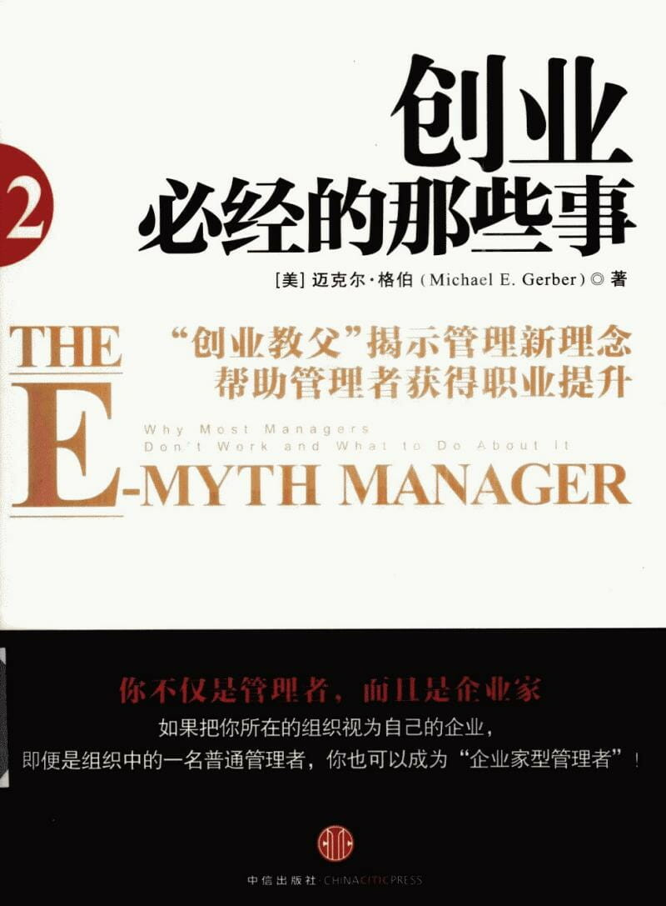

注：【】部分为笔者心得，非原文摘抄。
- 冒险会让人焦躁不安，不冒险却会使人迷失自我，完美的冒险则能让人认识自我。——索伦·克尔凯郭尔
- 如果感受到约束和不被欣赏，员工就再也不会从工作中找到任何意义或目的，也不会从他们为之工作的组织中找到任何奉献者或主人翁的感觉。
- 【组织内部的变革应当从管理者开始，自上而下，并且应该从思维方式开始。】
- 【团队管理者越是剥夺成员的正当权利，成员离管理者的愿景就越远。】
- 历史告诉我们，一种理念如果不受到挑战，就会很危险。
- 你的事业决定着你的前途，它是通往物质、心理以及文化保障的必由之路。
- 管理不是天天编写制度条例，而是一种思维方式。
- 利益是我们做任何事情背后的动机。
- 【广义的利益包括精神上的收益。】
- 世界上每一家公司的唯一目的就是成为利益圈套的世界级玩家。
- 唯一有效的管理工具在人类存在的最初时期就发明出来了，那就是贪婪和恐惧。
- 你必须成为你自己的国王，拥有掌控自己愿景的勇气，真实地面对恐惧和贪婪，并且理解它们以前是怎样控制你的。
- 换种新的方式思考日常事务就能释放新的能量，这会是一切都成为可能。——查尔斯·汉迪，《非理性的时代》
- 【人类普遍容易犯的错误是盲从。】
- 真正的国王为他的愿景而着迷，他知道他需要什么，并且不得到决不罢休。
- 管理者的责任是通过成为自己的国王，从而成为自己生活背后的重要力量。
- 除非你完全明白你想要的东西是什么，并且你想要的东西非常之大，以至于你必须全心投入，调动你的全部资源来实现它，否则你就会成为别人的计划、愿景和游戏的一个参与者。
- 【父母不要为孩子规划人生，否则孩子就是你给他制定的人生计划的参与者，而不是他自己人生的主人。】
- 管理者的陷阱就是让你消极地放弃创造自己的目标和愿景的责任。
- 你一旦知道自己需要什么，那么就只有你能够得到它；你应该重新创造自己的生活，这个责任不容推卸。
- 如果你的渴望只是别人渴望的一种反映，而不是你自己的，那么你的动力也只是别人动力的一种反映而已。
- 动力和欲望这两个事物一直是相辅相成的。
- 构想，是一种切合实际，并且愿意为之奋斗的梦想。
- 【安于现状比等于安住当下，安住当下是一种平和的心态，而安于现状则是甘于平庸。】
- 没有狭隘的人，只有狭隘的愿景。
- 要想管理好任何事物，首先要学会管理好你自己。
- 在审视自己时，我们心中唯一的目标就是：明白自己究竟是谁，真正希望自己成为谁，以及怎么去体验这两者之间的差距和由这种差距造成的压力。
- 从一个客观的旁观者的角度来审视自己。
- 生活是一个连续的问题，那就是不断地问自己：“现在我想要的是什么”。
- 唯一值得你追随的国王其实就是内在的自我，这种内在的自我会是的你在没有弄清自己是谁，以及为什么坐你正在做的事情之前不得安宁。
- 价值观是消极的，而原则是积极的，能够渗透我们的一切思维。
- 国王关注的是计划，管理者关注的是经营，而技师关注的是实践。
- 没有权利，就谈不上责任。
- 国王不仅要为管理者和技师指明方向，还要为他们提供坚持企业方向所需的意志和激励机制。
- 一旦流程和系统创立起来并得以执行，管理者就要对其效率进行监督。
- 技师有权用他的能力和资源来执行管理者的流程和系统，并最终实现国王的愿景。
- 实践系统是一种创造结果的流程。
- 国王为上帝构想了一座教堂，这就是企业。管理者用一种最好的办法来修建这座教堂，集中所有的资源、所有的人、所有的技能、所有的方案，这就是经营。技师打磨石块，并将石块搬运到合适的位置上，这就是实践。
- 除非一个管理者能够多次经历自己的想法从诞生、成长，到形成一种流程或系统，再到实施、监督、改进，最终被视作组织工作的一部分得以保留或是废弃的过程，否则他无法理解或评价一个决定或想法可能会耗费组织中每一个成员多少精力。
- 在最开明的组织中，管理者对下属并不实施管理，人们可以自我管理。
- 要选择，就必须具有一定的标准。要具有一定的标准，就必须拥有一个愿景。要拥有一个愿景，就必须提升到一定高度来认识企业在世界上所处的位置。要想认识企业在世界上所处的位置，就必须有能力将自己提升到一定高度，看清自己在世界上所处的位置与整个组织的关系，以及与组织外部环境的关系。要想将自己提升到一定高度，就必须具备关注非常规途径的能力。要想形成这种关注力，就必须实践，实践，再实践，这就是一个企业家型管理者的工作。
- 行动是任何人实现任何愿望的必要条件。——斯瓦米·切塔阿南达，《运动中的静止》。
- 每个组织的游戏规则都来自于最高层，而不是中层。
- 仅仅让老板觉得他自己很优秀是远远不够的，让老板觉得他自己很伟大才是一个真正玩家需要掌握的。
- 你要发现在你的组织中什么是最正确的，这是这个流程中最基本的东西。
- 在彻底改变组织的过程中，想象是最致命的。
- 真相是危险的，这是因为如果这个真相正是你不知道的，那么你将与之纠缠不清。
- 企业家型管理者是一个理解当前管理工作性质的人。
- 人类的最高目标就是去证明生命的馈赠。——诺曼·卡曾斯，《生命的庆典》。
- 要成为一个企业家型管理者，你必须开始去发现和摆脱你在公司要求下形成的那种伪装，发现你自己能够并且渴望成为一名最佳管理者。
- 成为企业家型管理者的第一步就是把这个组织当做自己的组织来进行思考。
- 要建立一个企业型组织，每一个企业型管理者都必须承担起为自己的团队创造愿景、系统和业绩的责任。
- 成为一个企业家型管理者并且对你所在的组织进行变革，需要 7 个步骤：首要目标、战略目标、财务战略、组织战略、管理战略、用人战略和营销战略。
- 一个人只有充分利用自我意识的力量，才能到达一个真正的人的高度，到达自由的高度。在这一刻，他是为他自己，而不是为他人而活着。——E·F·舒马赫，《迷途指津》。
- 当你的首要目标最终实现的时候，它应该是对于你所向往的生活的陈述。
- 如果说动物是有意识的，那么人却能够意识到自己是有意识的。
- 建立个人首要目标最明显的目的在于它能使你积极地生活，而不是让生活来支配你。
- 人都是不易管理的。他们不是被别人所激励，而是被自己的梦想、恐惧和贪婪所激励。
- 直到你体验到你带给周围人的影响时，你才能真正理解自己的角色。
- 把你的思想应用于实践，看看它在实践中究竟效果如何。——理查德·斯特罗兹·赫克勒，《变化剖析》。
- 一个管理者的战略目标必须将他自己的首要目标与公司的战略目标有机结合起来，因为你在企业中的角色应该是创造一项事业，这项事业能够体现公司的企业愿景。
- 无自我意识的组织对自己的愿景不清楚。
- 有自我意识的组织寻求智能，无自我意识的组织寻求解决办法。
- 组织都必须按照下列目标来运转：首要目标、战略目标、体现企业核心功能或所有功能的企业目标、每一位管理者的目标、还有你们作为其中一份子的部门的目标。
- 战略目标中包含战术性的东西是很重要的。
- 从责任的意义上说，每一个管理者不仅要明白个人与资金的关系，还要把这种关系把握好。
- 【“不当家不知柴米贵”——你不让他参与当家，他当然不知道柴米贵！】
- 利润就是一个组织为实现增长而赚取的资金。
- 一个企业家型管理者知道自己的管理对象不是人，而是工作。
- 一个组织必须被看做一个系统，而不是多个系统或多个职位。
- 企业家型管理者的组织战略是不仅决定组织要做什么，而且决定组织应该怎样去做。
- 管理关注的七个中心
- 基本的业务原则
- 营销
- 管理
- 资金
- 基本的业务流程
- 营销引导
- 营销转化
- 客户服务
- 核心
- 领导力
- 基本的业务原则
- 每种官僚主义的本质都是在管理机器中制造繁文缛节和臃肿的机构，使人变得呆板教条。——汉娜·阿伦特，《艾克曼在耶路撒冷——对平庸之恶的报道》。
- 任何一个最为严格意义上的管理者要想实现对一切的管理，就应该形成一种在实践中能够控制的系统。
- 创新是管理系统的第一部分。
- 无法量化的创新是毫无意义的。
- 所谓统一，即组织在一种可复制的系统中运行，这样产生的结果正是你期望的结果，这些结果及其发生的频率都与你所期望的一模一样。
- 企业家型管理者相信流程，而不相信人。
- 统一不会损害人们的积极性，因为它所关注的不是谁从事这项工作，而是我们的工作方式。
- 创新、量化和统一都是企业家型管理者的首要责任。
- 当我们的天性流露的时候，我们才是真正的人。——铃木俊隆，《初者的禅心》。
- 无论初衷多么良好，管理方面的研究和项目的缺陷都在于人们无法认识一个无可辩驳的事实：人是无法管理的。
- 真正的坦诚能够鼓励人们超越自我。
- 对于企业家型管理者而言，一半的效力和没有效力是一样的。
- 营销不仅仅是一项经营功能。它是对整个经营过程的总体评价。——西奥多·莱维特，《商业发展营销》。
- 真正的营销要求你具备一种能力，理解你所在的整个组织实际上就是你们销售的产品。
- 企业家型管理者在组织中承担的最大责任就是提供一种实现组织战略目标的方式。
- 当你将所在的组织看做自己的组织的时候，你就会对组织运行的每一种系统，每一种战略，包括营销，都承担其责任。
- 其实大多数管理者根本就不是管理者，而是受制于管理约束下的技师，所以他们习惯于做事，做事，不断地做事。
- 【明白自己是谁，倾听自己的心声，主宰自己的人生。】